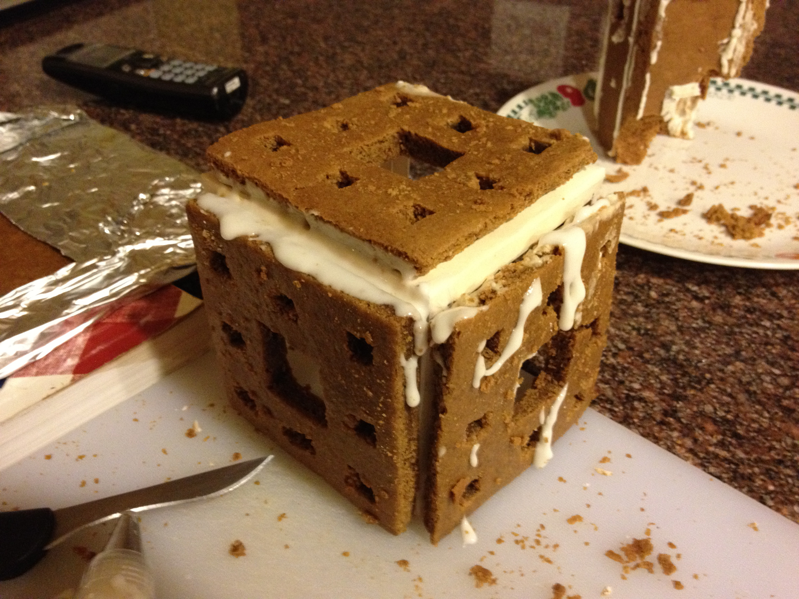
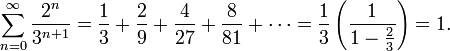
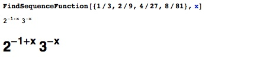
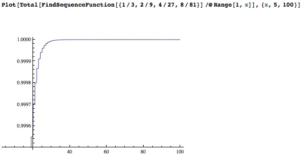

A gingerbread fractal
Me and my sister have a holiday tradition of making excessive amounts of gingerbread. This year, I decided I would attempt to make something a bit more unique than a house – thus, my [messy, incomplete] gingerbread Menger cube. I got about that far before it collapsed and broke into delicious mathematical ruin.

A Menger cube is a three dimensional fractal that simultaneously occupies zero volume but has infinite surface area. This is a slightly counterintuitive statement- common sense leads us to believe that an object with zero volume does not exist. Similarly, it is hard to imagine anything finite having an infinite surface area – if it is a finite cube, we naturally assume that we can calculate its surface area, making it a finite quantity. But in mathematics, intuition is usually wrong.
To understand this fractal, first consider a straight line. We cut the line into three equal pieces, and remove the middle piece. Then, we continue this process (of removing the middle third) on the resulting thirds on either side. This process continues “ad infinitum” (we keep doing it forever). What we end up with is something like this:

Common sense says that we will always have some infinitely small slivers of our original line left, because we never actually remove an entire segment, only a piece of it. For every segment we remove, there will always be two equal segments on either side that are still part of the set. But mathematicians favor numbers over common sense, so lets think about this removal pattern with numbers instead.
Let’s start with a line of length 1. The first time we remove the middle third, we remove a line of length 1/3. The second time we remove middle thirds, we remove two lines of length 1/9. This means that at this point, we’ve removed a total of 1/3 + 2 * 1/9 of our line, or 5/9. The next time, we’re removing 4 segments of length 1/27. We can find a function that gives the fraction removed during the nth iteration of this process analytically – for simplicity, I’ll use Mathematica instead.

I enlarged the generated function to make it more clearly visible. If we generate n successive terms and sum them together, we can get the total amount of line removed after the nth iteration of the process where we remove the center third from each remaining line segment.

As you can see, the sum of this sequence converges to 1. So, as we continue this process ad infinitum, we remove the entire line. This is called the Cantor set, named after German mathematician Georg Cantor. It is the set of all points on this line that remain after we do the infinitely recurring removal process. So is there anything left on the line or not? I’ll leave that for you to ponder.
The Wikipedia page on the Cantor set verifies the summation from above more simply:
Here’s the jist of it: if you remove the middle third from a line, and remove the middle thirds from the two segments on either end, and infinitely continue this process, you eventually remove the entire line, even though you will always have little slivers of line left. This isn’t because of rounding or inaccurate measurement – it’s just a set of points with remarkable and deep properties. Simply put, this conflict between math and reasoning leads to the conclusion that the Cantor set is uncountable.
So how does it relate to this cube? Well, let’s first look at the Sierpinski carpet, a two-dimensional extension of the Cantor set. Here, we do the same removal, except with squares, removing the center square and repeating the process on the eight sub-squares that we create around the one we removed. If this idea doesn’t make sense, try either squinting really hard or broadening your mind when you look at the following image.
By similar mathematical means, we can verify that the shape above has zero area but infinite perimeter. We can then apply this understanding to understanding Karl Menger’s cube.
Obviously, the cube I made out of gingerbread has a finite volume and surface area, and is really not that great of a Menger cube. But math is always more exciting during the holidays (at least to me), so I thought this would be fun to share.
Happy holidays!